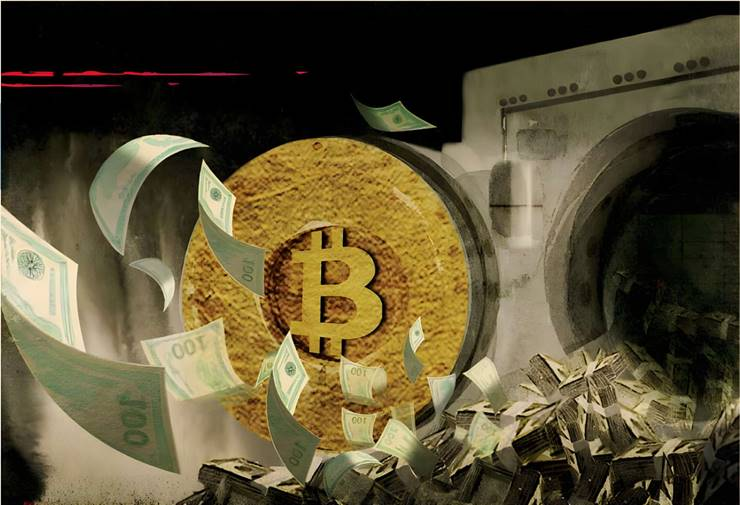

My heart sank last week when I read that JPMorgan Chase was looking into lending against clients’ cryptocurrency holdings, even though we all knew the day was coming when crypto would make its way into the real economy. Bitcoin, one of the digital assets banks may lend against, has been nearly four times as volatile as major indices since 2020. It has also had ties to terror funding, and I have yet to read anything that made me think it is more than a tool for speculators and criminals. But that hardly matters when the largest political donors are behind it.
Crypto political action committees have, over the last several years, spent tens of millions of dollars donating to not only Republican politicians but many Democrats too. This effort culminated a couple of weeks ago in the passage of the Genius Act. Legislation covering other crypto assets is expected later this year. I predict all this will not only cause the next financial crisis, but fuel even more political populism and unrest in the US.
It’s all too reminiscent of 2000, when advocates for over-the-counter derivatives descended on Washington begging to be properly “regulated” so that they could gift the world with financial “innovation.” What we got instead was a seven-fold increase in poorly regulated credit default swaps that culminated in the great financial crisis of 2008.
Now consider that US Treasury secretary Scott Bessent expects the stablecoin market to grow tenfold over the next few years, from a near-$200bn to a $2tn industry, one that will be embedded in everything from loan underwriting to Treasury markets.
As Democrat Elizabeth Warren, the ranking member of the Senate banking commission, told me last week: “We’ve seen this movie before,” with lobbyists “saying, ‘Please regulate us’ because they want the gold sticker of government confirmation that they are a ‘safe’ investment,” and politicians offering up bipartisan support for deregulation.
Indeed, you can draw a clear line from derivatives deregulation in 2000, and the broader Clinton era deregulation that eroded the barriers between trading and lending, to the weakening of Dodd Frank regulation for regional banks in 2018 (which contributed to the banking crisis of 2023), and now, the Genius Act. All of it was bipartisan. Warren, who was brought to power by voters who felt betrayed by mainstream politicians of both stripes, waged an unsuccessful campaign to convince Democrats not to go along with Republican support for the Genius Act.
But money talks, and the crypto lobby has already shown tremendous power by spending $40mn to defeat critics like Sherrod Brown of Ohio, the former Senate Banking chair. While almost two-thirds of Senate Democrats voted against the Genius Act, the proponents—including influential Democratic senators like Virginia's Mark Warner and New York’s Kirsten Gillibrand—were enough for the legislation to pass.
This worries me for four reasons.
First, the Genius Act (like the Commodity Futures Modernization Act of 2000) is being marketed as a way to make crypto safer, with stablecoins backed one to one by US dollars. But that doesn’t make what is, more broadly, a volatile asset class any less volatile. Indeed, it may only make the overall market more so. Advocates talk about cryptocurrencies such as bitcoin as a hedge against traditional markets, but in fact, bitcoin is a “high beta” investment, meaning that it is highly correlated to the stock market. That means that both gains and losses relative to the S&P are amplified. Anything over a beta of one indicates a higher volatility than the market. A recent Fidelity report found bitcoin’s rolling 3-year beta to the S&P was 2.6.
Second, I can’t imagine a worse moment to encourage financial “innovation” than when markets, economics and monetary policy are so uncertain. Consider what could happen if, over the coming months or years, the Fed must raise interest rates more sharply due to inflation. Markets would tank, as they always do when rates go up. Crypto would fall further and faster. Financial institutions (including any number of shadow banks) holding crypto on their balance sheets could then run into trouble, causing credit markets to freeze. Suddenly, we're facing echoes of 2008.
Enter my third worry. Genius Act proponents say it will support the dollar and the Treasury market. But one could easily imagine a flight to safety into which crypto companies like, say, Tether (which has more US Treasury holdings than Germany) must sell T-bills into a down market to cover redemptions. Then you’ve got a fire sale, higher borrowing costs, and yet another disastrous situation in which Main Street is under pressure to bail out speculators.
But this time, it comes after more than two decades of growing cynicism with politics. This gets me to my final worry. Financial deregulation from the late 1990s under the Clinton administration set the stage for both 2008 and a loss of working people’s support for Democrats. That in turn set the stage for Trump’s rise. Trump has now set the stage for our next financial crisis by backing (and of course, trading) crypto. What happens when we get financial chaos and more voter cynicism about mainstream politics at a time when there is less interest or ability for the government to buffer a downturn? No coin, and nothing stable.